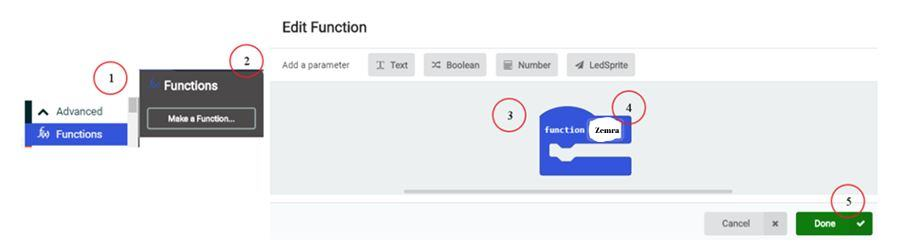
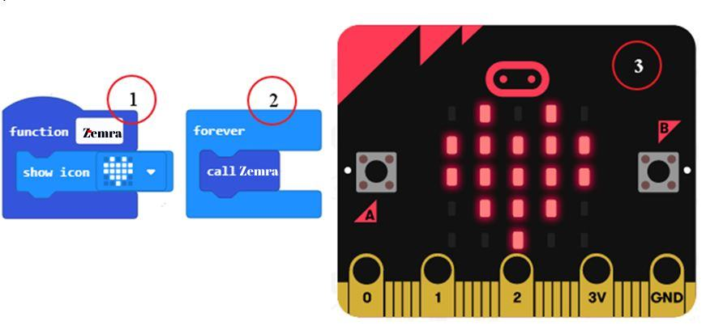
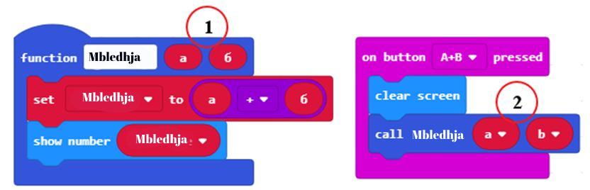

<!DOCTYPE html>
<html xmlns="http://www.w3.org/1999/xhtml" lang="en"></html>
  <head>
    <meta charset="utf-8" />
    <meta name="viewport" content="width=device-width, initial-scale=1.0" />
<title>Час 15 - Функције &#8212; Programimi i një pajisje Micro:bit në MakeCode </title>
    <link rel="stylesheet" href="_static/pygments.css" type="text/css" />
    <link rel="stylesheet" href="_static/basic.css" type="text/css" />
    <link rel="stylesheet" type="text/css" href="_static/activecode.css" />
    <link rel="stylesheet" type="text/css" href="_static/codemirror.css" />
    <link rel="stylesheet" type="text/css" href="_static/clickable.css" />
    <link rel="stylesheet" type="text/css" href="_static/pytutor.css" />
    <link rel="stylesheet" type="text/css" href="_static/modal-basic.css" />
    <link rel="stylesheet" type="text/css" href="_static/datafile.css" />
    <link rel="stylesheet" type="text/css" href="_static/dragndrop.css" />
    <link rel="stylesheet" type="text/css" href="_static/fitb.css" />
    <link rel="stylesheet" type="text/css" href="_static/matrixeq.css" />
    <link rel="stylesheet" type="text/css" href="_static/parsons.css" />
    <link rel="stylesheet" type="text/css" href="_static/lib/prettify.css" />
    <link rel="stylesheet" type="text/css" href="_static/poll.css" />
    <link rel="stylesheet" type="text/css" href="_static/showEval.css" />
    <link rel="stylesheet" type="text/css" href="_static/tabbedstuff.css" />
    <link rel="stylesheet" type="text/css" href="https://stackpath.bootstrapcdn.com/bootstrap/4.2.1/css/bootstrap.min.css" />
    <link rel="stylesheet" type="text/css" href="_static/video.css" />
    <link rel="stylesheet" type="text/css" href="_static/webgldemo.css" />
    <link rel="stylesheet" type="text/css" href="_static/webglinteractive.css" />
    <link rel="stylesheet" type="text/css" href="_static/karel.css" />
    <link rel="stylesheet" type="text/css" href="_static/notes.css" />
    <link rel="stylesheet" type="text/css" href="_static/simanim.css" />
    <link rel="stylesheet" type="text/css" href="_static/pycode.css" />
    <link rel="stylesheet" type="text/css" href="_static/p5js.css" />
    <link rel="stylesheet" type="text/css" href="_static/gallery.css" />
    <link rel="stylesheet" type="text/css" href="https://stackpath.bootstrapcdn.com/bootstrap/4.2.1/css/bootstrap.min.css" />
    <link rel="stylesheet" type="text/css" href="_static/video.css" />
    <link rel="stylesheet" href="_static/user-highlights.css" type="text/css" />
    <link rel="stylesheet" href="https://use.fontawesome.com/releases/v5.1.1/css/all.css" type="text/css" />
    <link rel="stylesheet" href="_static/bootstrap-4.0.0-dist/css/bootstrap.min.css" type="text/css" />
    <link rel="stylesheet" href="_static/flatly.min.css" type="text/css" />
    <link rel="stylesheet" href="_static/petlja-runestone.css" type="text/css" />
    <script id="documentation_options" data-url_root="./" src="_static/documentation_options.js"></script>
    <script type="text/javascript" src="_static/runestonebase.js"></script>
    <script type="text/javascript" src="_static/jquery.js"></script>
    <script type="text/javascript" src="_static/underscore.js"></script>
    <script type="text/javascript" src="_static/doctools.js"></script>
    <script type="text/javascript" src="_static/language_data.js"></script>
    <script type="text/javascript" src="_static/jquery.highlight.js"></script>
    <script type="text/javascript" src="_static/bookfuncs.js"></script>
    <script type="text/javascript" src="_static/codemirror.js"></script>
    <script type="text/javascript" src="_static/xml.js"></script>
    <script type="text/javascript" src="_static/css.js"></script>
    <script type="text/javascript" src="_static/python.js"></script>
    <script type="text/javascript" src="_static/htmlmixed.js"></script>
    <script type="text/javascript" src="_static/javascript.js"></script>
    <script type="text/javascript" src="_static/jquery_i18n/CLDRPluralRuleParser.js"></script>
    <script type="text/javascript" src="_static/jquery_i18n/jquery.i18n.js"></script>
    <script type="text/javascript" src="_static/jquery_i18n/jquery.i18n.messagestore.js"></script>
    <script type="text/javascript" src="_static/jquery_i18n/jquery.i18n.fallbacks.js"></script>
    <script type="text/javascript" src="_static/jquery_i18n/jquery.i18n.language.js"></script>
    <script type="text/javascript" src="_static/jquery_i18n/jquery.i18n.parser.js"></script>
    <script type="text/javascript" src="_static/jquery_i18n/jquery.i18n.emitter.js"></script>
    <script type="text/javascript" src="_static/jquery_i18n/jquery.i18n.emitter.bidi.js"></script>
    <script type="text/javascript" src="_static/activecode-i18n.en.js"></script>
    <script type="text/javascript" src="_static/skulpt.min.js"></script>
    <script type="text/javascript" src="_static/skulpt-stdlib.js"></script>
    <script type="text/javascript" src="_static/activecode.js"></script>
    <script type="text/javascript" src="_static/clike.js"></script>
    <script type="text/javascript" src="_static/timed_activecode.js"></script>
    <script type="text/javascript" src="_static/animationbase.js"></script>
    <script type="text/javascript" src="_static/mchoice.js"></script>
    <script type="text/javascript" src="_static/timedmc.js"></script>
    <script type="text/javascript" src="_static/timed.js"></script>
    <script type="text/javascript" src="_static/mchoice-i18n.en.js"></script>
    <script type="text/javascript" src="_static/clickable.js"></script>
    <script type="text/javascript" src="_static/timedclickable.js"></script>
    <script type="text/javascript" src="_static/d3.v2.min.js"></script>
    <script type="text/javascript" src="_static/jquery.ba-bbq.min.js"></script>
    <script type="text/javascript" src="_static/jquery.jsPlumb-1.3.10-all-min.js"></script>
    <script type="text/javascript" src="_static/pytutor.js"></script>
    <script type="text/javascript" src="_static/codelens.js"></script>
    <script type="text/javascript" src="_static/datafile.js"></script>
    <script type="text/javascript" src="_static/dragndrop.js"></script>
    <script type="text/javascript" src="_static/timeddnd.js"></script>
    <script type="text/javascript" src="_static/dragndrop-i18n.en.js"></script>
    <script type="text/javascript" src="_static/fitb.js"></script>
    <script type="text/javascript" src="_static/timedfitb.js"></script>
    <script type="text/javascript" src="_static/fitb-i18n.en.js"></script>
    <script type="text/javascript" src="_static/matrixeq.js"></script>
    <script type="text/javascript" src="_static/lib/prettify.js"></script>
    <script type="text/javascript" src="_static/lib/hammer.min.js"></script>
    <script type="text/javascript" src="_static/parsons.js"></script>
    <script type="text/javascript" src="_static/parsons-i18n.en.js"></script>
    <script type="text/javascript" src="_static/timedparsons.js"></script>
    <script type="text/javascript" src="_static/poll.js"></script>
    <script type="text/javascript" src="_static/reveal.js"></script>
    <script type="text/javascript" src="_static/shortanswer.js"></script>
    <script type="text/javascript" src="_static/timed_shortanswer.js"></script>
    <script type="text/javascript" src="_static/showEval.js"></script>
    <script type="text/javascript" src="_static/tabbedstuff.js"></script>
    <script type="text/javascript" src="_static/runestonevideo.js"></script>
    <script type="text/javascript" src="_static/webglinteractive.js"></script>
    <script type="text/javascript" src="_static/FileSaver.min.js"></script>
    <script type="text/javascript" src="_static/Blob.js"></script>
    <script type="text/javascript" src="_static/karelCorner.js"></script>
    <script type="text/javascript" src="_static/karelRobot.js"></script>
    <script type="text/javascript" src="_static/karelWorld.js"></script>
    <script type="text/javascript" src="_static/karelRobotDrawer.js"></script>
    <script type="text/javascript" src="_static/karelUI.js"></script>
    <script type="text/javascript" src="_static/karel.js"></script>
    <script type="text/javascript" src="_static/karel-i18n.en.js"></script>
    <script type="text/javascript" src="_static/notes.js"></script>
    <script type="text/javascript" src="_static/pygamelib-init.js"></script>
    <script type="text/javascript" src="_static/blockly/blockly_compressed.js"></script>
    <script type="text/javascript" src="_static/blockly/blocks_compressed.js"></script>
    <script type="text/javascript" src="_static/blockly/python_compressed.js"></script>
    <script type="text/javascript" src="_static/blockly/msg-sr.js"></script>
    <script type="text/javascript" src="_static/blockpy/utilities.js"></script>
    <script type="text/javascript" src="_static/blockpy/python_errors.js"></script>
    <script type="text/javascript" src="_static/blockpy/ast_node_visitor.js"></script>
    <script type="text/javascript" src="_static/blockpy/abstract_interpreter.js"></script>
    <script type="text/javascript" src="_static/blockpy/pytifa.js"></script>
    <script type="text/javascript" src="_static/blockpy/abstract_interpreter_definitions.js"></script>
    <script type="text/javascript" src="_static/blockpy/python_to_blockly.js"></script>
    <script type="text/javascript" src="_static/blockpy/imported.js"></script>
    <script type="text/javascript" src="_static/blockpy/blocks/class.js"></script>
    <script type="text/javascript" src="_static/blockpy/blocks/comment.js"></script>
    <script type="text/javascript" src="_static/blockpy/blocks/comprehensions.js"></script>
    <script type="text/javascript" src="_static/blockpy/blocks/dict.js"></script>
    <script type="text/javascript" src="_static/blockpy/blocks/if.js"></script>
    <script type="text/javascript" src="_static/blockpy/blocks/io.js"></script>
    <script type="text/javascript" src="_static/blockpy/blocks/lists.js"></script>
    <script type="text/javascript" src="_static/blockpy/blocks/sets.js"></script>
    <script type="text/javascript" src="_static/blockpy/blocks/loops.js"></script>
    <script type="text/javascript" src="_static/blockpy/blocks/parking.js"></script>
    <script type="text/javascript" src="_static/blockpy/blocks/tuple.js"></script>
    <script type="text/javascript" src="_static/blockpy/blocks/turtles.js"></script>
    <script type="text/javascript" src="_static/blockpy/blocks/text.js"></script>
    <script type="text/javascript" src="_static/blockpy-modal.js"></script>
    <script type="text/javascript" src="_static/simanim.js"></script>
    <script type="text/javascript" src="https://cdn.jsdelivr.net/pyodide/v0.16.1/full/pyodide.js"></script>
    <script type="text/javascript" src="_static/pycode.js"></script>
    <script type="text/javascript" src="//toolness.github.io/p5.js-widget/p5-widget.js"></script>
    <script type="text/javascript" src="_static/p5js.js"></script>
    <script type="text/javascript" src="_static/gallery.js"></script>
    <script type="text/javascript" src="_static/petljavideo.js"></script>
    <script type="text/javascript" src="_static/mchoice-i18n.sr-Cyrl.js"></script>
    <script type="text/javascript" src="_static/mchoice-i18n.sr.js"></script>
    <script type="text/javascript" src="_static/mchoice-i18n.sr-Latn.js"></script>
    <script type="text/javascript" src="_static/dragndrop-i18n.sr-Cyrl.js"></script>
    <script type="text/javascript" src="_static/dragndrop-i18n.sr.js"></script>
    <script type="text/javascript" src="_static/dragndrop-i18n.sr-Latn.js"></script>
    <script type="text/javascript" src="_static/fitb-i18n.sr-Cyrl.js"></script>
    <script type="text/javascript" src="_static/fitb-i18n.sr.js"></script>
    <script type="text/javascript" src="_static/fitb-i18n.sr-Latn.js"></script>
    <script type="text/javascript" src="_static/parsons-i18n.sr-Cyrl.js"></script>
    <script type="text/javascript" src="_static/parsons-i18n.sr.js"></script>
    <script type="text/javascript" src="_static/parsons-i18n.sr-Latn.js"></script>
    <script type="text/javascript" src="_static/activecode-i18n.sr-Cyrl.js"></script>
    <script type="text/javascript" src="_static/activecode-i18n.sr.js"></script>
    <script type="text/javascript" src="_static/activecode-i18n.sr-Latn.js"></script>
    <script type="text/javascript" src="_static/jquery-ui-1.10.3.custom.min.js"></script>
    <script type="text/javascript" src="_static/jquery-fix.js"></script>
    <script type="text/javascript" src="_static/bootstrap-4.0.0-dist/js/bootstrap.min.js"></script>
    <script type="text/javascript" src="_static/bootstrap-4.0.0-dist/js/bootstrap.bundle.min.js"></script>
    <script type="text/javascript" src="_static/bootstrap-sphinx.js"></script>
    <script type="text/javascript" src="_static/waypoints.min.js"></script>
    <script type="text/javascript" src="_static/rangy-core.js"></script>
    <script type="text/javascript" src="_static/rangy-textrange.js"></script>
    <script type="text/javascript" src="_static/rangy-cssclassapplier.js"></script>
    <script type="text/javascript" src="_static/user-highlights.js"></script>
    <script type="text/javascript" src="_static/jquery.idle-timer.js"></script>
    <script type="text/javascript" src="_static/processing-1.4.1.min.js"></script>
    <script type="text/javascript" src="_static/jquery.hotkey.js"></script>
    <script type="text/javascript" src="_static/jquery-migrate-1.2.1.min.js"></script>
    <link rel="index" title="Index" href="genindex.html" />
    <link rel="search" title="Search" href="search.html" />
<meta charset='utf-8'>
<meta http-equiv='X-UA-Compatible' content='IE=edge,chrome=1'>
<meta content='width=device-width, initial-scale=1.0, maximum-scale=1.0, user-scalable=0' name='viewport' />
<link rel="shortcut icon" href="_static/favicon.ico" type="image/ico" />

<script type="text/javascript">
  eBookConfig = {};
  eBookConfig.host = 'http://127.0.0.1:8000' ? 'http://127.0.0.1:8000' : 'http://127.0.0.1:8000';
  eBookConfig.app = eBookConfig.host + '/runestone';
  eBookConfig.ajaxURL = eBookConfig.app + '/ajax/';
  eBookConfig.course = 'Programimi i një pajisje Micro:bit në MakeCode ';
  eBookConfig.logLevel = '0';
  eBookConfig.loginRequired = 'false';
  eBookConfig.build_info = "";
  eBookConfig.isLoggedIn = false;
  eBookConfig.useRunestoneServices = 'false';
  eBookConfig.python3 = 'true';
  eBookConfig.basecourse = 'Programimi i një pajisje Micro:bit në MakeCode ';
  eBookConfig.runestone_version = '';
  eBookConfig.imagesDir = '_images/';
  eBookConfig.staticDir = '_static/';
  if(typeof(Sk) != "undefined")
      Sk.imgPath = eBookConfig.imagesDir;
</script>

<div id="fb-root"></div>


  </head><body>


<!-- Begin navbar -->

<nav id="navbar" class="navbar navbar-default navbar-fixed-top" role="navigation">

  <div class="container">

    <div class="navbar-header">
      <button type="button" class="navbar-toggle collapsed" data-toggle="collapse" data-target="#bs-example-navbar-collapse-1">
        <span class="sr-only">Toggle navigation</span>
        <span class="icon-bar"></span>
        <span class="icon-bar"></span>
        <span class="icon-bar"></span>
      </button>
      
    </div>

    <div class="collapse navbar-collapse" id="bs-example-navbar-collapse-1" style="margin-top: 10px; margin-left: 25px;">
      <ul class="nav navbar-nav">
        <li class="active"><a href="./">Programimi i një pajisje Micro:bit në MakeCode </a></li>
      </ul>
    </div>
  </div>
</nav>


<div class="container col-md-12" id="continue-reading"></div>

<div class="container col-md-8 col-md-offset-2" id="main-content" style="margin-top: 70px;">
  
  <div class="section" id="id1">
<h1>Час 15 - Функције<a class="headerlink" href="#id1" title="Permalink to this headline">¶</a></h1>
<p>На овом часу говорићемо о: ­</p>
<ul class="simple">
<li><p>­­­томе како се сложени програми деле на делове – функције;</p></li>
<li><p>креирању функција у МејкКоду;</p></li>
<li><p>параметрима и аргументима.</p></li>
</ul>
<p>У свету програмирања, поновно коришћење делова програма је веома важно, јер чини програм једноставнијим и читљивијим. Како бисмо избегли поновно писање и понављање истог или сличног програма, користимо <strong>функције</strong>.</p>
<p>Једна од главних улога функције је да рашчлани програм на делове који имају тачно дефинисане улоге. На пример, за прављење пице, потребно је да направиш тесто, развучеш тесто, додаш преливе, додаш састојке, и на крају је испечеш. Ако бисте програмирали робота за производњу пица, коришћењем функција можеш целокупни поступак “направи пицу” да поделиш на делове - једна функција за сваки део процеса прављења пица, нпр. поступак прављења теста, процес печења,…..</p>
<p>Уопштено говорећи, функције се односе на процедуру – како ћемо нешто урадити.</p>
<p>Функција у MeјкКоду представља групу наредби које се извршавају само када су позване.</p>
<p><strong>Како се дефинишу функције</strong></p>
<p>Да бисмо дефинисали функцију потребно је да изаберемо из категорије Advanced подкатегорију Function. Из категорије Function (1) кликнемо на дугме Make a Function (2). Појавиће се дијалошки прозор (3) који омогућава креирање функције. У пољу за назив функције упиши име (4), на пример Срце и потврди кликом на дугме Done (5).</p>
<a class="reference internal image-reference" href="_images/252.png"></a>
<p>У радном окружење појавиће се нови блок Срце, којем треба придружити блок за приказивање слике срца <a class="reference internal" href="_images/253.png"></a> (1).</p>
<p>У програму, приказивање слике срца (3) функције Срце вршимо позивањем функције користећи блок <a class="reference internal" href="_images/254.png"></a> (2).</p>
<a class="reference internal image-reference" href="_images/255.png"></a>
<p>Нови блок може да има и улазна поља. Захваљујући томе можемо да користимо функцију за израчунавање збира два броја а и b. Да бисмо то постигли, потребно је да из категорије <em>Function</em>, кликнемо на дугме <em>Make a Function</em>. Отвара се прозор у коме уносимо име функције <strong>Сабирање</strong>.</p>
<p>Од четири могућности које су понуђене за додавање нових поља у блоку <a class="reference internal" href="_images/256.png"></a> изабраћемо два блока <em>Number</em> и на нашем блоку ће се појавити одговарајућа два улазна поља у које ћемо уписати а и b имена променљивих за два сабирка.</p>
<a class="reference internal image-reference" href="_images/257.png"></a>
<p>Име a и b који смо унели у заглавље дефиниције фунције Сабирање назива се <strong>параметар</strong> (1). Конкретне вредности параметара ћемо задати као <strong>аргумент</strong> (2) новоуведене функције. Тај аргумент ће заменити свако појављивање параметра а и b у функцији. За параметар можемо да кажемо да је „чувар“ места за аргумент. Да бисмо функцију користили, морамо да је “позовемо” навођењем њеног имена, коришћењем блока <a class="reference internal" href="_images/258.png"></a>. У поља <a class="reference internal" href="_images/259.png"></a>  превлачимо аргументе <a class="reference internal" href="_images/260.png"></a> и <a class="reference internal" href="_images/261.png"></a> (2).</p>
<a class="reference internal image-reference" href="_images/262.png"></a>
<p>Аргументе a и b ћемо креирати користећи функцију за насумично биране бројчаних вредности <a class="reference internal" href="_images/263.png"></a> од 0 до 10, тако што притиснемо тастере А и Б на микробиту:</p>
<p><strong>Цртање хоризонталних линија (свака друга)</strong></p>
<a class="reference internal image-reference" href="_images/264.png"></a>
<p>Да бисмо нацртали хоризонталну линију (паралелну х оси) потребно је да повежемо све тачке које имају исту вредност координате у. На пример, ако је у=0 нацртаћемо саму х осу. На почетку укључујемо диодицу на левом рубу екрана микробита у тачку (0, 0), и попуњавамо празна поља све до (5,0). Следећи корак да пређемо на цртање следеће линије у другом и последњем реду.
Ако желимо да нацртамо све хоризонталне линије чија је у координата број који се завршава цифром 0 (дељив са 2) понављаћемо претходно описани поступак за у=2 и 4.</p>
<a class="reference internal image-reference" href="_images/265.png"></a>
<p>Да би поступак био прегледнији, издвојићемо инструкције за цртање једне хоризонталне линије у засебну целину – функцију Линија хоризонтална, коју ћемо, по потреби, позивати.</p>
<a class="reference internal image-reference" href="_images/266.png"></a>
<p><strong>Цртање вертикалних линија</strong></p>
<p>Слично цртању хоризонталне линије, да бисмо нацртали вертикалну линију потребно је да повежемо све тачке које имају исту вредност координате х. На почетку поставимо да је упаљена диода на горњи руб екрана, на пример у тачку (0,0), и затим, укључујемо све диоде у интервалу (0, 5). Следећи корак да пређемо на цртање следеће линије у другом и последњем реду.
Ако желимо да нацртамо све хоризонталне линије чија је x координата број који се завршава цифром 0 (дељив са 2) понављаћемо претходно описани поступак за x=2 и 4.</p>
<a class="reference internal image-reference" href="_images/267.png"></a>
<p>Упамтите цео појекат под називом <em>Мрежа</em>.</p>
<p><strong>Размисли:</strong></p>
<p>Треба да креираш функцију којом се исцртава квадрат као на слици.</p>
<a class="reference internal image-reference" href="_images/268.png"></a>
<p>Креиране су одговарајуће функције и код којим се црта квадрат.</p>
<a class="reference internal image-reference" href="_images/269.png"></a>
<p>Међутим, ови блокови као резултат дају следећу слику.</p>
<a class="reference internal image-reference" href="_images/270.png"></a>
<p>Где је грешка?</p>
<p>Одговор:
У функцији Линија вертикална у блоку <em>plot x ….</em>  уместо 0 постави променљиву x из главног програма, исто урадити у функцији Линија хоризонтална у блоку <em>plot y….</em> уместо 0 постави променљиву y из главног програма.</p>

    <div class="course-box course-box-info">
        <div class="course-content">
            <p>
<dl class="simple">
<dt><strong>Шта смо научили?</strong></dt><dd><ul class="simple">
<li><p>да је главна улога функције да рашчлани програм на делове који имају тачно дефинисане улоге.</p></li>
<li><p>како се креирају нови блокови (функције) са и без улазних поља. Блокови са улазним пољима, аргументе који се у њих уписују прослеђује функцији дајући параметра вредности. На тај начин, један исти блок може да реализује више различитих акција у зависности вредности аргумената.</p></li>
</ul>
</dd>
</dl>

    </p></div></div>
<div class="section" id="id2">
<h2>Квиз<a class="headerlink" href="#id2" title="Permalink to this headline">¶</a></h2>

            <div class="course-box course-box-question course-content">
            <ul data-component="multiplechoice" data-multipleanswers="false"  id="L15P1">
            <p>Q-43: Да ли је главни програм надређен функцијама? Означи тачан одговор.</p>

            <li data-component="answer"  id="L15P1_opt_a">Да</li><li data-component="feedback" id="L15P1_opt_a">Браво! Твој одговор је тачан.</li>
            
            <li data-component="answer"  id="L15P1_opt_b">Не</li><li data-component="feedback" id="L15P1_opt_b">Твој одговор није тачан. Покушај поново!</li>
            

            </ul>
            </div>
            
            <div class="course-box course-box-question course-content">
            <ul data-component="multiplechoice" data-multipleanswers="false"  id="L15P2">
            <p>Q-44: Да ли се у MeјкКоду функције могу реализовати на само један начин? Означи тачан одговор.</p>

            <li data-component="answer"  id="L15P2_opt_a">Да</li><li data-component="feedback" id="L15P2_opt_a">Твој одговор није тачан. Покушај поново!</li>
            
            <li data-component="answer" data-correct id="L15P2_opt_b">Не</li><li data-component="feedback" id="L15P2_opt_b">Браво! Твој одговор је тачан.</li>
            

            </ul>
            </div>
            
            <div class="course-box course-box-question course-content">
            <ul data-component="multiplechoice" data-multipleanswers="false"  id="L15P3">
            <p>Q-45: Да ли блок за функцију може да има и улазна поља? Означи тачан одговор.</p>

            <li data-component="answer"  id="L15P3_opt_a">Да</li><li data-component="feedback" id="L15P3_opt_a">Браво! Твој одговор је тачан.</li>
            
            <li data-component="answer"  id="L15P3_opt_b">Не</li><li data-component="feedback" id="L15P3_opt_b">Твој одговор није тачан. Покушај поново!</li>
            

            </ul>
            </div>
            
            <div class="course-box course-box-question course-content">
            <ul data-component="multiplechoice" data-multipleanswers="false"  id="L15P4">
            <p>Q-46: Да ли се вредности које блок предаје функцији називају параметри? Означи тачан одговор.</p>

            <li data-component="answer"  id="L15P4_opt_a">Да</li><li data-component="feedback" id="L15P4_opt_a">Твој одговор није тачан. Покушај поново!</li>
            
            <li data-component="answer" data-correct id="L15P4_opt_b">Не</li><li data-component="feedback" id="L15P4_opt_b">Браво! Твој одговор је тачан.</li>
            

            </ul>
            </div>
            </div>
</div>


  
      <div class="col-md-12">
<ul class="pager">
</ul>

<!-- <ul class="pager"> -->
    <!-- -->
    <!-- -->
<!-- </ul> -->

<script type="text/javascript">

  $('#relations-prev').tooltip({'placement':'right', 'selector': '', 'delay': { show: 100, hide: 50}});
  $('#relations-next').tooltip({'placement':'left', 'selector': '', 'delay': { show: 100, hide: 50}});

</script>
</div>
  
</div>
<footer class="footer col-md-12">
    <div class="container">
        <div class="text-center">
            <hr>
            <p class="text-muted">
                <span class="pull-left">&copy; 2021 British Council (Created using  <a href="https://pypi.org/project/Sphinx/">Swinx</a>, <a href="http://runestoneinteractive.org/">RunestoneComponents</a> and <a href="https://github.com/Petlja/PetljaDoc">PetljaDoc</a>)</span>
            </p>
        </div>
    </div>
</footer>


<script type="text/javascript">
  var _gaq = _gaq || [];
  _gaq.push(['_setAccount', 'UA-32029811-1']);
  _gaq.push(['_trackPageview']);

  (function() {
    var ga = document.createElement('script'); ga.type = 'text/javascript'; ga.async = true;
    ga.src = ('https:' == document.location.protocol ? 'https://ssl' : 'http://www') + '.google-analytics.com/ga.js';
    var s = document.getElementsByTagName('script')[0]; s.parentNode.insertBefore(ga, s);
  })();
</script>


  </body>
</html>